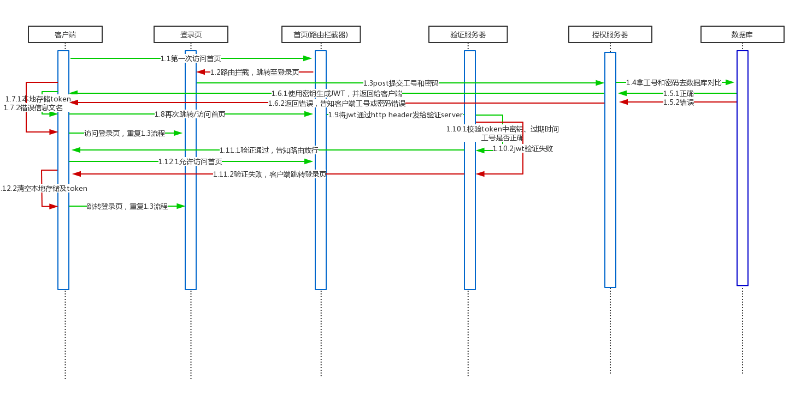

一、流程图
此项目为员工考勤查询系统，前端为angular 5，后端为php、MySQL(LNMP)，前端页面包含登录页、首页（考勤数据查询页），主要在用户访问首页时进行校验。用户登录所需相关信息已提前录入数据库，故这里只涉及登录，不讨论注册流程。因在开发环境下，涉及跨域测试，故还通过后端php实现了CORS。
如下内容，是本人参考多篇文章后，自己的理解与实现，可能与实际使用有出入

流程文字说明：
- 用户第一次访问首页时，因客户端没有token，会被首页的路由守卫拦截，然后引导至登录页
- 用户输入工号、密码，post提交给后端授权服务器
- 授权服务器拿着工号、密码，到MySQL中比对，如果正确，则使用secret key（签名）、工号、时间戳，生成jwt，并返回给客户端；如果MySQL中查询错误，则将错误信息返回给客户端
- 客户端根据返回数据中的result字段，判断授权是否通过；通过则将其中的token、工号、英文名存入LocalStorage，以备后续使用，然后再次尝试访问首页；如果不通过，则在登录页显示错误信息，告知用户重新输入
- 路由守卫得知用户需访问首页，先检查token，发现存在，则将此token放入http header中（Authorization: Bearer）发送给后端验证服务器
- 验证服务器解包，读取token字串，比对三项信息：secret key是否正确、token是否过期、工号是否是对应的客户端，只要三项中任一出错，则返回给路由守卫false；如果都正确则返回true
- 路由守卫获得验证服务器发来的信息，如果为true，则表示验证通过，允许用户访问首页；如果为false，表示用户token错误（一般是过期），则引导用户至登录页，重新登录获取新的token
二、实现步骤
1.php配置CORS
后端的授权、验证服务，都配置上，方便测试；实际生产环境，要按需修改1
2
3
header('Access-Control-Allow-Origin: *');
header('Access-Control-Allow-Headers: Origin, X-Requested-With, Content-Type, Accept, Authorization');
2.配置前端auth.service.ts
此服务包含向后端请求的登录授权、token验证服务1
2
3
4
5
6
7
8
9
10
11
12
13
14
15
16
17
18
19
20
21
22
23
24
25
26
27import {Injectable} from '@angular/core';
import 'rxjs/Rx';
import {HttpClient} from '@angular/common/http';
()
export class AuthService {
constructor(private http: HttpClient) {
}
login(uwid: string, upwd: any) {
const postData = new FormData();
postData.append('uwid' , uwid);
postData.append('upwd' , upwd);
return this.http.post('https://test.com/backend/authentication.php', postData);
}
validate(uwid: string){
const postData = new FormData();
postData.append('uwid' , uwid);
return this.http.post('https://test.com/validation.php', postData);
}
logout(){
localStorage.clear();
}
}
注意：http.post数据，需以formdata形式传送，否则后端无法获取到
3.配置首页的路由守卫服务
1 | import {Injectable} from '@angular/core'; |
注意：由于验证动作是异步返回数据，故路由守卫需返回Observable类型的布尔值，这样才能正常判断
4.前端登录组件
接收授权服务返回的数据，并存入LocalStorage，如有错误，提示用户1
2
3
4
5
6
7
8
9
10
11
12
13
14
15
16
17
18
19
20
21
22
23
24
25
26
27
28
29
30
31
32
33
34
35
36
37
38
39
40
41
42
43
44
45
46
47
48
49
50
51
52import {Component, OnInit} from '@angular/core';
import {FormBuilder, FormGroup, Validators} from '@angular/forms';
import {AuthService} from '../services/auth.service';
import {ActivatedRoute, Router} from '@angular/router';
import {Md5} from 'ts-md5/dist/md5';
({
selector: 'app-login',
templateUrl: './login.component.html',
styleUrls: ['./login.component.css']
})
export class LoginComponent implements OnInit {
formModel: FormGroup;
returnUrl: string;
loginErrInfo = false;
constructor(private authService: AuthService,
private route: ActivatedRoute,
private router: Router,) {
}
ngOnInit() {
const fb = new FormBuilder;
this.formModel = fb.group({
uwid: ['', [Validators.required]],
upwd: ['', [Validators.required]]
});
this.returnUrl = this.route.snapshot.queryParams['returnUrl'] || '/';
this.authService.logout();
}
login() {
const uid = this.formModel.value.uwid;
const password = Md5.hashStr(this.formModel.value.upwd);
this.authService.login(uid, password).subscribe(data => {
console.log(data);
if (data['result'] === 1) {
this.loginErrInfo = false;
this.setSession(data);
} else {
this.loginErrInfo = true;
}
});
}
setSession(data) {
localStorage.setItem('token', data.token);
localStorage.setItem('uwid', data.uwid);
localStorage.setItem('uename', data.uename);
this.router.navigate([this.returnUrl]);
}
}
5.前端Http拦截器服务
用于将token插入每个http request header中，方便后端获取token
(1)需先在根模块中声明
1 | import {HTTP_INTERCEPTORS, HttpClientModule} from '@angular/common/http'; |
(2)实现
如果有token，则更新request；如果没有，则直接发送1
2
3
4
5
6
7
8
9
10
11
12
13
14
15
16
17
18
19
20
21
22
23
24
25
26
27
28import {Injectable} from '@angular/core';
import {HttpEvent, HttpHandler, HttpRequest} from '@angular/common/http';
import {Observable} from 'rxjs/Observable';
()
export class TokenInterceptorService {
constructor() {
}
intercept(req: HttpRequest<any>,
next: HttpHandler): Observable<HttpEvent<any>> {
const token = localStorage.getItem('token');
if (token) {
const cloned = req.clone({
headers: req.headers.set('Authorization',
'Bearer ' + token)
});
return next.handle(cloned);
} else {
return next.handle(req);
}
}
}
6.配置后端php安装jwt库
（1）这里使用 lcobucci/jwt实现php-jwt，按照文档说明，先安装composer
（2）按照 composer官网，在Linux中输入如下命令，获取composer.phar
1 | php -r "copy('https://getcomposer.org/installer', 'composer-setup.php');" |
(3)将composer.phar拷贝至项目相关目录下，比如test/backend，运行composer.phar require lcobucci/jwt，这里将安装lcobucci/jwt
更新（2018/05/21）: ubuntu可以直接运行sudo apt-get install composer来安装，然后在php文件相关目录下安装jwtsudo composer require lcobucci/jwt
7.配置php授权服务器
用于获取用户发来的工号、密码信息，并与MySQL比对后，生成jwt返回客户端1
2
3
4
5
6
7
8
9
10
11
12
13
14
15
16
17
18
19
20
21
22
23
24
25
26
27
28
29
30
31
32
33
34
35
36
37
38
header('Access-Control-Allow-Origin: *');
header('Access-Control-Allow-Headers: Origin, X-Requested-With, Content-Type, Accept, Authorization');
header("Content-Type:application/json;charset=utf-8");
require_once 'vendor/autoload.php';
use Lcobucci\JWT\Builder;
use Lcobucci\JWT\Parser;
use Lcobucci\JWT\ValidationData;
use Lcobucci\JWT\Signer\Hmac\Sha256;
$uwid = $_REQUEST['uwid'];
$upwd = $_REQUEST['upwd'];
include('config.php');
$link = mysqli_connect($db_url,$db_user,$db_pwd,$db_name,$db_port);
$sql = "set names utf8";
mysqli_query($link,$sql);
$sql = "select * from asus_user where uwid='$uwid' and upwd='$upwd'";
$result = mysqli_query($link,$sql);
$list = mysqli_fetch_assoc($result);
$uename = $list['uename'];
if($list){
$signer = new Sha256();
$token = (new Builder())->setIssuer('test.com')
->setAudience('test.com')
->setIssuedAt(time())
->setId($uwid, true)
->setExpiration(time() + 3600) //一小时后过期
->sign($signer, 'your secret key')
->getToken();
echo json_encode(['result' => 1, 'message' => 'Token generated successfully', 'uwid' => $uwid, 'uename' => $uename, 'token' => '' . $token]);
} else {
echo json_encode(['result' => 0, 'message' => 'Invalid username and/or password']);
}
8.配置验证服务器
用于获取http request header中的token字串，并做校验，然后返回结果1
2
3
4
5
6
7
8
9
10
11
12
13
14
15
16
17
18
19
20
21
22
23
24
25
26
27
28
29
30
31
32
33
34
35
header('Access-Control-Allow-Origin: *');
header('Access-Control-Allow-Headers: Origin, X-Requested-With, Content-Type, Accept, Authorization');
header("Content-Type:application/json;charset=utf-8");
require_once 'vendor/autoload.php';
use Lcobucci\JWT\Builder;
use Lcobucci\JWT\Parser;
use Lcobucci\JWT\ValidationData;
use Lcobucci\JWT\Signer\Hmac\Sha256;
$uwid = $_REQUEST['uwid'];
$fetchToken = '';
$validateMsg = '';
foreach ($_SERVER as $name => $value){
if ($name == 'HTTP_AUTHORIZATION'){
$fetchToken = substr($value, 7);
}
}
$token = (new Parser())->parse($fetchToken);
$signer = new Sha256();
$signerCheck = $token->verify($signer, 'your secret key');
$expireCheck = $token->getClaim('exp') > time();
$uwidCheck = $token->getClaim('jti') == $uwid;
if(!$signerCheck) $validateMsg .= '签名已被篡改！';
if(!$expireCheck) $validateMsg .= ' token已过期！';
if(!$uwidCheck) $validateMsg .= ' 非当前用户的token！';
if(!$signerCheck || !$expireCheck || !$uwidCheck){
echo json_encode(['result' => false, 'message' => $validateMsg]);
} else {
echo json_encode(['result' => true, 'message' => '验证通过！']);
}
参考链接：
Angular Security - Authentication With JSON Web Tokens (JWT): The Complete Guide
Angular 2/5 User Registration and Login Example & Tutorial
How to simplify your app’s authentication by using JSON Web Token
Angular2 canActivate() calling async function
Angular Authentication: Using the Http Client and Http Interceptors